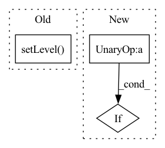

Pattern ID :25143
Before Change
"-%(lineno)d-%(process)d: %(message)s")
datefmt = "%a %d %b %Y %H:%M:%S"
formatter = logging.Formatter(fmt, datefmt)
self._logger.setLevel( level)
log_path = os.path.join(output_dir, log_filename)
file_handler = logging.FileHandler(log_path)
file_handler.setLevel(logging.INFO)After Change
stream_handler = logging.StreamHandler(sys.stdout)
stream_handler.setFormatter(formatter)
if not self.logger.handlers and log_path is not None:
fh = logging.FileHandler(log_path)
fh.setLevel(logging.INFO)
fh.setFormatter(formatter)In pattern: SUPERPATTERN
Frequency: 6
Non-data size: 3
Instances Fragment ID: 76952790
Project Name: spico197/rex
Commit Name: 6c064639242c6f66893a4319081b7339ff6a43da
Time: 2021-05-06
Author: spico1026@gmail.com
File Name: rex/utils/logger.py
M Class Name: Logger
N Class Name: Logger
M Method Name: __init__(4)
N Method Name: __init__(5)
M Parent Class: object
N Parent Class: object
M File Name: rex/utils/logger.py
N File Name: rex/utils/logger.py
M Start Line: 9
M End Line: 37
N Start Line: 7
N End Line: 34
Before Change
self.time_buf = {}
self.formatter = logging.Formatter("%(asctime)s %(filename)s %(funcName)s [line:%(lineno)d] %(levelname)s %(message)s")
self.head = logging.StreamHandler()
self.head.setLevel( logging.INFO)
self.head.setFormatter(self.formatter)
self.addHandler(self.head)
def check_if_log(self, round, eval_interval=-1):After Change
if self.meta["log_file"]:
log_dir = self.get_log_path()
self.log_path = os.path.join(log_dir, self.get_time_string()+self.get_output_name(".log"))
if not os.path.exists(self.get_log_path()) :
os.mkdir(log_dir)
self.filehandler = logging.FileHandler(self.log_path)
self.filehandler.setFormatter(self.formatter) Fragment ID: 76952791
Project Name: wwzzz/easyfl
Commit Name: 45505e44ba6f50c9df0453fd543b7dfe0891d0e9
Time: 2022-07-29
Author: zzz510711928@gmail.com
File Name: utils/logger/basic_logger.py
M Class Name: Logger
N Class Name: Logger
M Method Name: __init__(2)
N Method Name: __init__(1)
M Parent Class: logging.Logger
N Parent Class: logging.Logger
M File Name: utils/logger/basic_logger.py
N File Name: utils/logger/basic_logger.py
M Start Line: 16
M End Line: 19
N Start Line: 22
N End Line: 48
Before Change
// Disable PyTorch Lightning logs
if config["disable_lightning_logs"]:
logging.getLogger("lightning").setLevel( logging.ERROR)
// Pretty print config using Rich library
if config["print_config"]:
utils.print_config(config)After Change
trainer.fit(model=model, datamodule=datamodule)
// Evaluate model on test set after training
if not config.trainer.get("fast_dev_run") :
log.info(f"Starting testing!")
trainer.test()
Fragment ID: 76952788
Project Name: ashleve/lightning-hydra-template
Commit Name: b45d3b31ecd57cf321b0d4db78b8fac766996922
Time: 2021-03-06
Author: zalewski.ukas@gmail.com
File Name: train.py
M Class Name: AnonimousClass
N Class Name: AnonimousClass
M Method Name: train(1)
N Method Name: train(1)
M Parent Class:
N Parent Class:
M File Name: train.py
N File Name: train.py
M Start Line: 22
M End Line: 95
N Start Line: 27
N End Line: 101
Before Change
// Create logger
logger = cls._get_root_logger()
logger.setLevel( logging.INFO)
// Add duplicate filter
// logger.addFilter(RepeatFilter())
After Change
logger = cls._get_root_logger()
// Add duplicate filter if none has been added.
if not any([isinstance(f, RepeatFilter) for f in logger.filters]) :
logger.addFilter(RepeatFilter())
// Add stream handler if none has been added. Fragment ID: 76952789
Project Name: graphnet-team/graphnet
Commit Name: bd3e5418b7edfeab96db9eec4a03bd56bee34218
Time: 2023-02-21
Author: andreas.sogaard@gmail.com
File Name: src/graphnet/utilities/logging.py
M Class Name: Logger
N Class Name: Logger
M Method Name: _configure_root_logger(2)
N Method Name: _configure_root_logger(2)
M Parent Class:
N Parent Class:
M File Name: src/graphnet/utilities/logging.py
N File Name: src/graphnet/utilities/logging.py
M Start Line: 87
M End Line: 111
N Start Line: 83
N End Line: 115
Before Change
level=os.environ.get("LOGLEVEL", "INFO").upper(),
stream=sys.stdout,
)
logging.getLogger("absl").setLevel( "WARNING")
logging.getLogger("werkzeug").setLevel("WARNING")
logger = logging.getLogger("alpa.opt_serving")
stdout_logger = logging.getLogger("stdout")After Change
)
// Set the format of root handlers
if not logging.getLogger().handlers :
logging.basicConfig(level=logging.INFO)
logging.getLogger().handlers[0].setFormatter(formatter)
logging.getLogger("werkzeug").setLevel("WARNING") Fragment ID: 76952787
Project Name: alpa-projects/alpa
Commit Name: a98576f247c48705651fdb25ce32da5cc2fa8237
Time: 2022-09-09
Author: lianminzheng@gmail.com
File Name: examples/opt_serving/service/utils.py
M Class Name: AnonimousClass
N Class Name: AnonimousClass
M Method Name: build_logger(0)
N Method Name: build_logger(0)
M Parent Class:
N Parent Class:
M File Name: examples/opt_serving/service/utils.py
N File Name: examples/opt_serving/service/utils.py
M Start Line: 15
M End Line: 54
N Start Line: 15
N End Line: 59